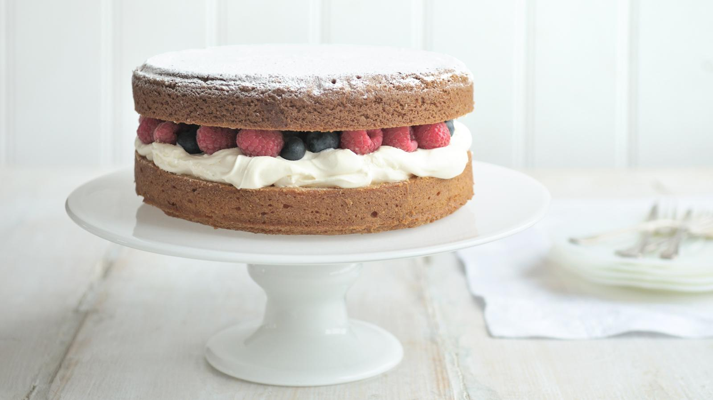

Vicoria Sponge

A delicious Victoria Sponge
This simplest of sponge cake recipes has a fresh berry and whipped cream filling that takes the classic Victoria
sponge to new heights.
Ingredients
- 225g/8oz butter or margarine, softened at room temperature
- 225g/8oz caster sugar
- 4 medium free-range eggs
- 2 tsp vanilla extract
- 225g/8oz self raising flour
- milk, to loosen
- 200ml/7fl oz double cream
- 250g/9oz mixed berries
- icing sugar, for dusting
Steps
- Preheat the oven to 180C/350F/Gas 4.
- Grease and line 2 x 18cm/7in cake tins with baking paper.
- Cream the butter and the sugar together in a bowl until pale and fluffy.
- Beat in the eggs, a little at a time, and stir in the vanilla extract.
- Fold in the flour using a large metal spoon, adding a little extra milk if necessary, to create a batter with a soft dropping consistency.
- Divide the mixture between the cake tins and gently spread out with a spatula.
- Bake for 20-25 minutes, or until golden-brown on top and a skewer inserted into the middle comes out clean.
- Remove from the oven and set aside for 5 minutes, then remove from the tin and peel off the paper. Place onto a wire rack.
- Whip the cream with a whisk or electric handheld mixer until it forms soft peaks when the whisk is removed.
- Sandwich the cakes together the whipped cream and berries. Dust with icing sugar.